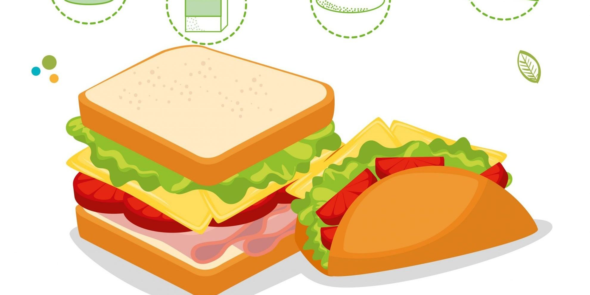
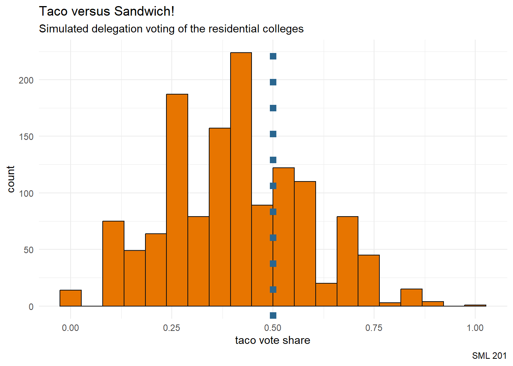
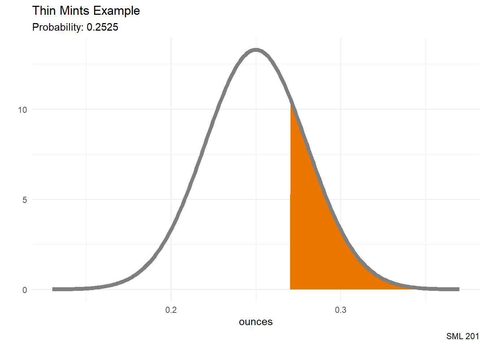

library("gt") #great tables
library("janitor") #helps with counts and proportions
library("patchwork") #side-by-side plots
library("tidyverse") #tools for data wrangling and visualization
# school colors
princeton_orange <- "#E77500"
princeton_black <- "#121212"
Libraries and Helper Functions
# helper function
vnorm <- function(x, mu = 0, sigma = 1, section = "lower"){
# bell curve
x_vals <- seq(mu - 4*sigma, mu + 4*sigma, length.out = 201)
y_vals <- dnorm(x_vals, mu, sigma)
df_for_graph <- data.frame(x_vals, y_vals)
# outline shaded regions
if(length(x) == 1){
shade_left <- rbind(c(x[1],0), df_for_graph |>
filter(x_vals < x[1]))
shade_right <- rbind(c(x[1],0), df_for_graph |>
filter(x_vals > x[1]))
}
if(length(x) == 2){
shade_between <- rbind(c(x[1],0),
df_for_graph |>
filter(x_vals > x[1] &
x_vals < x[2]),
c(x[2],0))
shade_tails <- rbind(df_for_graph |>
filter(x_vals < x[1]),
c(x[1],0),
c(x[2],0),
df_for_graph |>
filter(x_vals > x[2]))
}
# compute requested probability
# prob_val <- case_when(
# section == "upper" ~ round(1 - pnorm(x,mu,sigma), 4),
# section == "between" ~ round(diff(pnorm(x,mu,sigma), 4)),
# section == "tails" ~ round(1 - diff(pnorm(x,mu,sigma), 4)),
# .default = round(pnorm(x,mu,sigma), 4)
# )
if(section == "lower"){
bell_curve <- df_for_graph |>
ggplot(aes(x_vals, y_vals)) +
geom_polygon(aes(x = x_vals, y = y_vals),
data = shade_left,
fill = "#E77500",) +
# geom_segment(aes(x = x, y = 0,
# xend = x, yend = dnorm(x,mu,sigma))) +
geom_line(color = "gray50", linewidth = 2)
prob_val <- round(pnorm(x,mu,sigma), 4)
}
if(section == "upper"){
bell_curve <- df_for_graph |>
ggplot(aes(x_vals, y_vals)) +
geom_polygon(aes(x = x_vals, y = y_vals),
data = shade_right,
fill = "#E77500",) +
# geom_segment(aes(x = x, y = 0,
# xend = x, yend = dnorm(x,mu,sigma))) +
geom_line(color = "gray50", linewidth = 2)
prob_val <- 1 - round(pnorm(x,mu,sigma), 4)
}
if(section == "between"){
bell_curve <- df_for_graph |>
ggplot(aes(x_vals, y_vals)) +
geom_polygon(aes(x = x_vals, y = y_vals),
data = shade_between,
fill = "#E77500",) +
# geom_segment(aes(x = x[1], y = 0,
# xend = x[1], yend = dnorm(x[1],mu,sigma)))
# +
# geom_segment(aes(x = x[2], y = 0,
# xend = x[2], yend = dnorm(x[2],mu,sigma))) +
geom_line(color = "gray50", linewidth = 2)
prob_val <- round(diff(pnorm(x,mu,sigma)), 4)
}
if(section == "tails"){
bell_curve <- df_for_graph |>
ggplot(aes(x_vals, y_vals)) +
geom_polygon(aes(x = x_vals, y = y_vals),
data = shade_tails,
fill = "#E77500",) +
# geom_segment(aes(x = x[1], y = 0,
# xend = x[1], yend = dnorm(x[1],mu,sigma)))
# +
# geom_segment(aes(x = x[2], y = 0,
# xend = x[2], yend = dnorm(x[2],mu,sigma))) +
geom_line(color = "gray50", linewidth = 2)
prob_val <- round(1 - diff(pnorm(x,mu,sigma)), 4)
}
# plot bell curve
bell_curve +
labs(subtitle = paste0("Probability: ", prob_val),
caption = "SML 201", y = "") +
theme_minimal()
}graph_noise <- function(x,y){
this_df <- data.frame(x = x, y = y)
lin_fit <- lm(y ~ x, data = this_df)
coef_det <- summary(lin_fit)$adj.r.squared
this_df |>
ggplot(aes(x,y)) +
geom_point(color = princeton_orange) +
geom_smooth(formula = "y ~ x",
method = "lm",
se = TRUE) +
labs(title = "The Signal and the Noise",
subtitle = paste0("Coefficient of Determination: ", round(coef_det, 4)),
caption = "SML 201") +
theme_minimal()
}SML 201
Start
Goal: Introduce social science
Objective: Compute probabilities with the normal distribution
Scenario: Taco versus Sandwich
The undergraduates at Princeton are choosing an official food item, and the two remaining candidates are “tacos” and “sandwiches”. Suppose also that with regards to prior events, some residential colleges are allotted more delegates than others.

- image credit: El Pollo Norteño
set.seed(201)
college <- c("Butler", "Forbes", "Mathey", "New College West", "Rockefeller", "Whitman", "Yeh College")
n <- length(college)
delegates <- sample(11:20, size = n, replace = FALSE)
taco_prop <- round(runif(n), 2)
# if you want to experiment with this example later, you can explicitly set the weights here
# college <- c("Butler", "Forbes", "Mathey", "New College West", "Rockefeller", "Whitman", "Yeh College")
# delegates <- c(13, 16, 17, 12, 11, 15, 18)
# taco_prop <- c(27, 10, 29, 57, 68, 61, 47) / 100
df_election <- data.frame(
college, delegates, taco_prop
)
df_election <- df_election |>
mutate(sandwich_prop = 1 - taco_prop)set.seed(201)
df_election <- df_election |>
rowwise() |>
mutate(picks = sample(c("Taco", "Sandwich"),
size = 1,
prob = c(taco_prop, sandwich_prop)))
df_election <- df_election |>
mutate(picks_bool = ifelse(picks == "Taco", 1, 0))
taco_share <- sum(df_election$delegates * df_election$picks_bool) / sum(df_election$delegates)
print(taco_share)[1] 0.254902election_result <- case_when(
taco_share < 0.5 ~ "Sandwich Won",
taco_share > 0.5 ~ "Taco Won",
.default = "tie"
)
print(election_result)[1] "Sandwich Won"Simulation
So far, we have merely one observation. What if we wanted to address broader questions like
- How often would taco win in this scenario?
- What is the variance (or standard deviation) for the
taco_share?
Frequentist Probability
- Frequentist probability: If we could repeat an experiment infinitely many iterations, what would the proportion be?
for loops
A common programming tool is the for loop. We tend to use letters \(i\), \(j\), and \(k\) historically as counter variables.
N <- 7 #number of iterationsfor(i in 1:N){
print(i)
}[1] 1
[1] 2
[1] 3
[1] 4
[1] 5
[1] 6
[1] 7for(i in 1:N){
print(i^2)
}[1] 1
[1] 4
[1] 9
[1] 16
[1] 25
[1] 36
[1] 49for(i in 1:N){
print(LETTERS[1:i])
}[1] "A"
[1] "A" "B"
[1] "A" "B" "C"
[1] "A" "B" "C" "D"
[1] "A" "B" "C" "D" "E"
[1] "A" "B" "C" "D" "E" "F"
[1] "A" "B" "C" "D" "E" "F" "G"for(i in 1:N){
print(paste0("When i = ", i, " , the first ", i, " LETTERS are ",
paste0(LETTERS[1:i], collapse = "")))
}[1] "When i = 1 , the first 1 LETTERS are A"
[1] "When i = 2 , the first 2 LETTERS are AB"
[1] "When i = 3 , the first 3 LETTERS are ABC"
[1] "When i = 4 , the first 4 LETTERS are ABCD"
[1] "When i = 5 , the first 5 LETTERS are ABCDE"
[1] "When i = 6 , the first 6 LETTERS are ABCDEF"
[1] "When i = 7 , the first 7 LETTERS are ABCDEFG"Election Simulation
N <- 1337 #number of simulations
start_time <- Sys.time()
# pre-allocate space for storing results
taco_share_vec <- rep(NA, N)
for(i in 1:N){
df_election <- df_election |>
rowwise() |>
mutate(picks = sample(c("Taco", "Sandwich"),
size = 1,
prob = c(taco_prop, sandwich_prop)))
df_election <- df_election |>
mutate(picks_bool = ifelse(picks == "Taco", 1, 0))
taco_share_vec[i] <- sum(df_election$delegates * df_election$picks_bool) / sum(df_election$delegates)
}
df_simulation <- data.frame(iter = 1:N, taco_share_vec)
print(Sys.time() - start_time)Time difference of 6.510849 secs
On the computer processing of simulations
If your computer is older
- took a while to draw maps
- took a while to produce network visuals
you may reduce the number of iterations from 1337 to 201 (for example).
Visualize the Simulation
Now, taco_share_vec is itself a numerical variable, so we can visualize its distribution with a histogram.
df_simulation |>
ggplot(aes(x = taco_share_vec)) +
geom_histogram(bins = 20, color = princeton_black, fill = princeton_orange) +
geom_vline(xintercept = 0.5, color = "#2A668F",
linewidth = 3, linetype = 3) +
labs(title = "Taco versus Sandwich!",
subtitle = "Simulated delegation voting of the residential colleges",
caption = "SML 201",
x = "taco vote share") +
theme_minimal()
Simulation Statistics
To wrap up this example,
- “Taco” had this vote share on average:
mean(df_simulation$taco_share_vec)[1] 0.4101442To compute how often “Taco” would win probabilistically, we could
- count the iterations where
taco_share_vec > 0.50 - divide by the number of iterations
mean(df_simulation$taco_share_vec > 0.50)[1] 0.2984293Preview: the standard error is the standard deviation of a sampling distribution.
sd(df_simulation$taco_share_vec)[1] 0.1734641Density Plot
Now, taco_share_vec is itself a numerical variable, so we can visualize its distribution with a denisty plot.
df_simulation |>
ggplot(aes(x = taco_share_vec)) +
geom_density(color = princeton_black, fill = princeton_orange) +
geom_vline(xintercept = 0.5, color = "#2A668F",
linewidth = 3, linetype = 3) +
labs(title = "Taco versus Sandwich!",
subtitle = "Simulated delegation voting of the residential colleges",
caption = "SML 201",
x = "taco vote share") +
theme_minimal()Normal Distribution
General Normal Distribution
When we model applications with \(X \sim N(\mu, \sigma^{2})\), by applying the \(z\)-score transformation
\[z = \frac{x - \mu}{\sigma}\]
the normal distribution has probability density function
\[\text{PDF: } f(x; \mu, \sigma) = \frac{1}{\sigma\sqrt{2\pi}} \cdot e^{-\frac{1}{2}\left(\frac{x-\mu}{\sigma}\right)^{2}}\]
and cumulative distribution function
\[F(x) = \Phi\left(\frac{x-\mu}{\sigma}\right) = \frac{1}{2}\left[1 + \text{erf}\left(\frac{x-\mu}{\sigma\sqrt{2}}\right)\right]\]
\[~\]
R code: pnorm(x, mu, sd)
Examples
Suppose that the incubation period—that is, the time between being infected with the virus and showing symptoms—for Covid-19 is normally distributed with a mean of 8 days and a standard deviation of 3 days. Find the probability that a randomly selected case demonstrated symptoms in fewer than 7 days.
- image credit: University of Chicago
pnorm(7, 8, 3)vnorm(7, 8, 3)
Girl Scout Thin Mint cookies have a mean size of 0.25 ounces. Find the probability that one randomly selected cookie has a size of more than 0.27 ounces if the standard deviation is 0.03 ounces. Assume a normal distribution.
pnorm(0.27, 0.25, 0.03, lower.tail = FALSE)vnorm(0.27, 0.25, 0.03, section = "upper")

The cones in the eye detect light. The absorption rate of cones is normally distributed. In particular, the “green” cones have a mean of 535 nanometers and a standard deviation of 65 nanometers. If an incoming ray of light has wavelengths between 550 and 575 nanometers, calculate the percentage of that ray of light that will be absorbed by the green cones.
pnorm(575, 535, 65) - pnorm(550, 535, 65)vnorm(c(550, 575), 535, 65, section = "between")
Suppose that the number of french fries in the batches at In-n-Out are normally distributed with a mean of 42 french fries and a standard deviation of 3.7 french fries. Your friend tells you that the In-n-Out employee is flirting with you if you end up with a french fry count in the top 5 percent. How should we characterize the top 5 percent of french fries?
qnorm(0.95, 42, 3.7)vnorm(qnorm(0.95, 42, 3.7), 42, 3.7, section = "upper")
Intuition
In order to help students build intuition about the normal distribution, we statistics teachers like to say the following 3 statements about the standard normal distribution (\(\mu = 0\), \(\sigma = 1\)).
vnorm(c(-1,1), 0, 1, section = "between") +
labs(title = "About 68 percent of data falls\nwithin one standard deviation of the mean",
x = "z")vnorm(c(-2,2), 0, 1, section = "between") +
labs(title = "About 95 percent of data falls\nwithin 2 standard deviations of the mean",
x = "z")vnorm(c(-3,3), 0, 1, section = "between") +
labs(title = "About 99 percent of data falls\nwithin 3 standard deviations of the mean",
x = "z")Scenario: Mean Corpuscular Volume
The mean corpusular volume or mean cell volume (MCV) is the average volume of a red blood cell. The following information was gathered, adapted, heavily rounded from the Wikipedia page, and should not constitute medical advice. For these mathematical examples, assume that the mean MCV is \(\mu = 90\) fL/cell with a standard deviation of \(\sigma = 5\) fL/cell and that we can apply the normal distribution based on numerous blood tests.
MedScape says that the reference range for MCV is from 80 to 96 fL/cell. Find the probability that a randomly selected blood test will fall within the reference range. This is also known as normocytic size for MCV.
vnorm(c(80, 96), 90, 5, section = "between") +
labs(title = "MCV Reference Range",
x = "fL/cell")Microcytic anemia describes low levels of MCV and could be caused by diseases such as thalassemia. If microcytic anemia is diagnosed at MCV levels below 80 fL/cell, find the probability that a randomly selected blood test will suggest microcytic anemia.
vnorm(80, 90, 5) +
labs(title = "Microcyctic anemia",
x = "fL/cell")Macrocytic or pernicious anemia describes high levels of MCV, and that may be caused by a nutrient deficiency (for instance, deficiency of vitamin B12). Find the probability that a randomly selected blood test will report an MCV value above 96 fL/cell.
vnorm(96, 90, 5, section = "upper") +
labs(title = "MCV Reference Range",
x = "fL/cell")Toward Significance
Traditionally, scientists sought out extreme values among the 5 percent probability combined in the tails. What are the MCV levels for these regions?
qnorm(c(0.025, 0.975), 90, 5)[1] 80.20018 99.79982vnorm(qnorm(c(0.025, 0.975), 90, 5),
90, 5, section = "tails") +
labs(title = "Two-Tailed Significance",
x = "fL/cell")Simulation
Suppose that we have 10000 patients whose MCV has mean \(\mu = 90\) fL/cell with a standard deviation of \(\sigma = 5\) fL/cell. From the simulation, what percentage of patients were in each diagnosis category (reference range, microcyctic anemia, macrocyctic anemia)?
num_patients <- 1e5
df_mcv <- data.frame(
id = 1:num_patients,
mcv = rnorm(num_patients, 90, 5)
)df_mcv <- df_mcv |>
mutate(diagnosis = case_when(
mcv >= 96 ~ "macrocyctic anemia",
mcv <= 80 ~ "microcyctic anemia",
.default = "reference range"
))# janitor package helps find proportions
df_mcv |>
tabyl(diagnosis) |>
adorn_totals("row") |>
adorn_pct_formatting() diagnosis n percent
macrocyctic anemia 11542 11.5%
microcyctic anemia 2208 2.2%
reference range 86250 86.2%
Total 100000 100.0%Exogenous
Suppose that we have 10000 patients from a different population whose MCV has mean \(\mu = 88\) fL/cell with a standard deviation of \(\sigma = 3\) fL/cell. From the simulation, what percentage of patients were in each diagnosis category (reference range, microcyctic anemia, macrocyctic anemia)?
df_mcv <- df_mcv |>
mutate(mcv2 = rnorm(num_patients, 88, 3))df_mcv <- df_mcv |>
mutate(diagnosis2 = case_when(
mcv2 >= 96 ~ "macrocyctic anemia",
mcv2 <= 80 ~ "microcyctic anemia",
.default = "reference range"
))
df_mcv |>
tabyl(diagnosis2) |>
adorn_totals("row") |>
adorn_pct_formatting() diagnosis2 n percent
macrocyctic anemia 396 0.4%
microcyctic anemia 373 0.4%
reference range 99231 99.2%
Total 100000 100.0%The Signal and the Noise
Now, equipped with more tools, let us return to regression and ask, “What kind of situations are bad for linear regression?”
Gaussian White Noise
n <- 201 #number of data points
x_vals <- 1:n
y_vals <- 0.201*x_vals + rnorm(n, 0, 3)
graph_noise(x_vals, y_vals)Polynomials
n <- 201 #number of data points
x_vals <- 1:n
y_vals <- (x_vals - n/2)^2 + rnorm(n, 0, 2*n)
graph_noise(x_vals, y_vals)Seasonal
n <- 201 #number of data points
x_vals <- 1:n
y_vals <- sin((2*pi/75)*x_vals) + rnorm(n, 0, 0.201)
graph_noise(x_vals, y_vals)Heteroscedasticity
Heteroscedasticity is a situation where we can no longer assume that the variance is the same for all observations.
n <- 201 #number of data points
x_vals <- 1:n
y_vals <- 0.201*x_vals + 100 +
rnorm(n, 0, x_vals/10)
graph_noise(x_vals, y_vals) +
labs(title = "Heteroscedasticity")Grading Curves
In a past teaching job, Derek would apply a grading curve as follows:
- “A” to the top 9 percentile
- “A-” to the next 9 percentile
- etc.
Suppose that a class of Calculus students took an exam and the grading yielded a sample average of \(\bar{x} = 70\) and a sample standard deviation of \(s = 15\) percentage points. Derek’s curve would look like
On a recent exam, data science students had a sample average of \(\bar{x} = 60\) and a sample standard deviation of \(s = 4.97\) percentage points. Derek’s curve would look like
# patchwork
p1 / p2xbar <- 70
s <- 15
curve_percentiles <- seq(28, 100, by = 9)/100
breakpoints <- qnorm(curve_percentiles, xbar, s)
df_vert <- data.frame(
x_breakpoints = breakpoints,
y_breakpoints = dnorm(breakpoints, xbar, s)
)
p1 <- vnorm(qnorm(0.28, xbar, s), xbar, s, section = "upper") +
geom_segment(aes(x = x_breakpoints,
y = 0,
xend = x_breakpoints,
yend = y_breakpoints),
data = df_vert) +
labs(title = "Grading Curve for a Hypothetical Exam",
x = "percent") +
scale_x_continuous(
breaks = breakpoints,
labels = c("C-", "C", "C+", "B-", "B", "B+", "A-", "A", ""),
limits = c(50, 100)
)
p1xbar <- 90.38
s <- 8.28
curve_percentiles <- seq(28, 100, by = 9)/100
breakpoints <- qnorm(curve_percentiles, xbar, s)
df_vert <- data.frame(
x_breakpoints = breakpoints,
y_breakpoints = dnorm(breakpoints, xbar, s)
)
p2 <- vnorm(qnorm(0.28, xbar, s), xbar, s, section = "upper") +
geom_segment(aes(x = x_breakpoints,
y = 0,
xend = x_breakpoints,
yend = y_breakpoints),
data = df_vert) +
labs(title = "Grading Curve for Exam 1",
x = "percent") +
scale_x_continuous(
breaks = breakpoints,
labels = c("C-", "C", "C+", "B-", "B", "B+", "A-", "A", ""),
limits = c(50, 100)
)
p2Quo Vadimus?
- Precept 6
- Group Cover Page
- Project 2 (due Oct 30)
- Exam 2 (December 5)
| If this grading curve was applied | |
|---|---|
| to Exam 1 (out of 60 points) | |
| letter_grade | breakpoints |
| A | 60.89 |
| A- | 58.78 |
| B+ | 57.28 |
| B | 56.01 |
| B- | 54.85 |
| C+ | 53.73 |
| C | 52.58 |
| C- | 51.33 |
| Note: this grading curve will not be applied to SML 201 | |
Footnotes
(optional) Additional Resources
Session Info
sessionInfo()R version 4.4.1 (2024-06-14 ucrt)
Platform: x86_64-w64-mingw32/x64
Running under: Windows 10 x64 (build 19045)
Matrix products: default
locale:
[1] LC_COLLATE=English_United States.utf8
[2] LC_CTYPE=English_United States.utf8
[3] LC_MONETARY=English_United States.utf8
[4] LC_NUMERIC=C
[5] LC_TIME=English_United States.utf8
time zone: America/New_York
tzcode source: internal
attached base packages:
[1] stats graphics grDevices utils datasets methods base
other attached packages:
[1] lubridate_1.9.3 forcats_1.0.0 stringr_1.5.1 dplyr_1.1.4
[5] purrr_1.0.2 readr_2.1.5 tidyr_1.3.1 tibble_3.2.1
[9] ggplot2_3.5.1 tidyverse_2.0.0 patchwork_1.3.0 janitor_2.2.0
[13] gt_0.11.1
loaded via a namespace (and not attached):
[1] sass_0.4.9 utf8_1.2.4 generics_0.1.3 xml2_1.3.6
[5] lattice_0.22-6 stringi_1.8.4 hms_1.1.3 digest_0.6.35
[9] magrittr_2.0.3 RColorBrewer_1.1-3 evaluate_1.0.1 grid_4.4.1
[13] timechange_0.3.0 fastmap_1.2.0 Matrix_1.7-0 jsonlite_1.8.8
[17] mgcv_1.9-1 fansi_1.0.6 scales_1.3.0 cli_3.6.2
[21] rlang_1.1.4 splines_4.4.1 munsell_0.5.1 withr_3.0.1
[25] yaml_2.3.8 tools_4.4.1 tzdb_0.4.0 colorspace_2.1-1
[29] vctrs_0.6.5 R6_2.5.1 lifecycle_1.0.4 snakecase_0.11.1
[33] htmlwidgets_1.6.4 pkgconfig_2.0.3 pillar_1.9.0 gtable_0.3.5
[37] glue_1.7.0 xfun_0.48 tidyselect_1.2.1 rstudioapi_0.17.0
[41] knitr_1.48 farver_2.1.2 nlme_3.1-164 htmltools_0.5.8.1
[45] labeling_0.4.3 rmarkdown_2.28 compiler_4.4.1
Example Callout Block
note, tip, warning, caution, or important